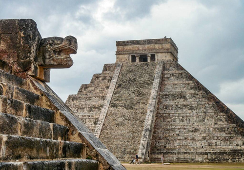
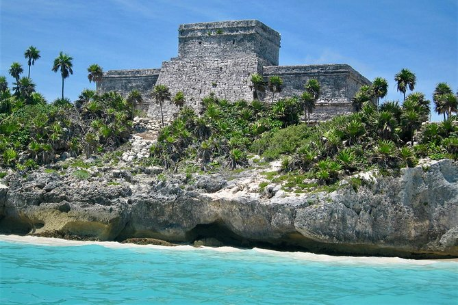

The Island's History

Artifacts on Cozumel date back to the ancient Mayan civilizations. The temples were believed to draw women looking for support with fertility. It was a goal to make the trek at least once. Some of the ruins of these temples remain today although the largest were demolished during WWII to make way for runways. Sad! After the Mayans came the Spanish expeditions. The first was led by Juan de Grijalva on May 3rd, 1518. Later that year the population grew to be 20,000 people strong, which was quickly reduced to 3,000 just 8 years later. Very few visited in the years after except for the ocassional merry band of pirates!
Mayan Ruins on and Near Cozumel
- Chichen Itza
- Tulum
- Coba
- Ek Balam
- San Gervasio (The largest on Cozumel)
